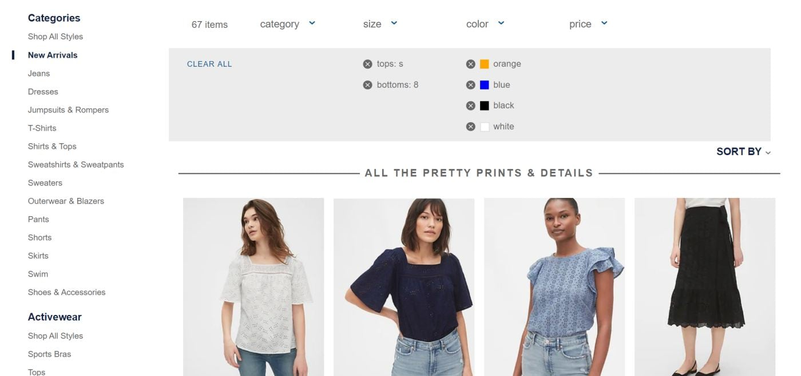

Data Table & Filtering
Priorities and Take Aways
Recognise the difference
- Operational Filtering Tasks - supporting the day-to-day functions. Lower value > Lower expertise > Lower Complexity
- Analytical Filtering Tasks - supporting the strategic and planning functions of management. Higher value > Higher expertise > Higher Complexity
Prioritise Operational Tasks
Provide a list that enables Operational tasks and prioritise it on the UI over everything else, so speed and simplicity is promoted over power and complexity.
Prioritise Operational Tasks
This filtering is'nt discrete
Prioritise Operational Tasks
This filtering is much in terms of staying out of the way
Flexible enough for multiple Use Cases
The parts need to be modular and scaleable where possible. We aren't in a position to design the information ahead of time.
Search box
- Add a search box so there is more inherent power at very little cost in UI complexity
- Possibly saves the need for multiple checkbox filters and therefore Applied Filters section at all
Provide dropdowns if only single choice filters are required
- Applied Filters section is overkill if table listing only requires a a single choice dropdown or two
- We need to engineer for the possibility of a developer to go with this simpler option, when its the best solution in that case
- We also need a process to support the above
But do support multiple selections when suitable
Single choice filtering is unlikely to provide enough power in many use cases.
- Allow selections in multiple columns/categories - Dog, Brown
- Allow multiple selections within each category/column - Brown, Black, White. This makes the a 'Applied Filter' section(s) a requirement, as there is no easy way of showing multiple choices in a dropdown element.
Provide category specific filters
- Only allow filters on visible columns - simpler mind model?
- Maybe this isn't a problem with a 'Applied Fiter' section
Therefore Filter Selections should be 'Modal'
- Ie. they happen on a level above the main level of the UI so when the using isn't actually selecting a filter the form elements needed to make the selection are hidden from view
- A Popup will support more complicated filters like Start Date to End Date, while also being modular and scaleable
Filter Selections should be 'Modal'
Batch filtering
- Batch filtering means that the page refreshes and gives results only after you’ve made some selection and clicked the Apply button.
- Interactive filtering is when the system reacts to your every choice and refreshes the page every time.
- The choice between introducing batch or interactive filters depends on whether the User is likely to have multiple selection criteria or only one, and the app speed (how quickly a user gets the search result).
- If we allow mulitple choices in each category and some lists are long (ie results might be slow) we should probably use a 'Apply' button.
Applied filters section advantages
- Providing a context for the results list
- Providing an obvious and immediate confirmation that filters have been applied
- *Providing a quick way to remove filters
- As well as allowing the filters selection to be placed inside a Popup and this;
- Allows a model which can be implemented on small screens
Hiding applied filters creates a disconnect
Applied filters
Applied filters positioning
The display of the 'Applied filters' should sit immediately below the elements that allowed the selection and above the actual Table list.
The proximity and placement provides the best hint of the relationship between these elements.
Good context, but still disconnected
Better Placement
Running the Applied Filters down page - nice but too dominating of space for functionality provided
Presentation of Applied filters
Applied filters should display left to right horizontally with some filter names truncated after x number of characters, with the additional of a rollover for full length and a link to provide the option to display full length.
Results count is also very useful
Position and Presentation
Filter types
Some filters make no sense without also stating the filter type. We need a one size fits all solution to this option so we should either state the type in smaller text above the actual selection OR group the types so they are only needing stated once per group
Filter types

Mobile Version
Mobile Version
No Match
We need to be more elegant when delivering no results
Applied to information in Insight
- Filters a developed and considered individually
- A listing can have zero, one or multiple filters
- Different UIs for different types of filters, e.g. date range, pick from list, patient picker
- Easy to remove / add a filter (for the user)
- Filters which are currently active and their values are clear
- UI will work on smaller screens
Applied to information in Insight
- The developer can prefill a filter, e.g. for meetings list show current and future meetings by default
This is fine but we need to decide case by case if its really navigation or default filtering we are providing. We should use prefilled filters sparingly as it increases cognitive load.
Navigation versus Filtering
- Navigation and Filtering are 2 different concepts even if the end result is the same.
- The scope provided by navigation is a hard ceiling, and the filter provided thereafter can only create a smaller subset of results. The Naigation link should be clearly stated at the top of the page 'content' area and any subsequent context provided by filtering must sit below and inside this.
- The default of most screens should also be a 'No Filter' state, where the 'Applied Filters' section should not be displayed until a filter selction has been made by the User.
Navigation Tabs v Links
Tabs are useful if we know the number of links are going to be limited to 4 or 5, but need to sit on a line of their own
Navigation Tabs
If larger they won't fit in horizontal tabs and vertical tabs are unsuitable for the these type of tasks where navigation is more likely to get in the way
Navigation Links
A simple set of links inside a UL list that easily grows with the additional tables is a better solution.
Current
Improved with modest effort
List navigation
Most flexible solution and most suitable for large number of table/lists
Tabs
This is suitable will a limited number of items
Resources
- how-to-design-applied-filters
- uxdesign.cc/crafting-a-kickass-filtering
- filtering-and-sorting-best-practices-on-mobile
- https://uxplanet.org/9-filtering-design-best-practices-to-improve-e-commerce-ux-edac50560f94
- https://uxplanet.org/how-to-improve-advanced-search-ux-450df698004c
- http://ui-patterns.com/patterns/LiveFilter/examples/777